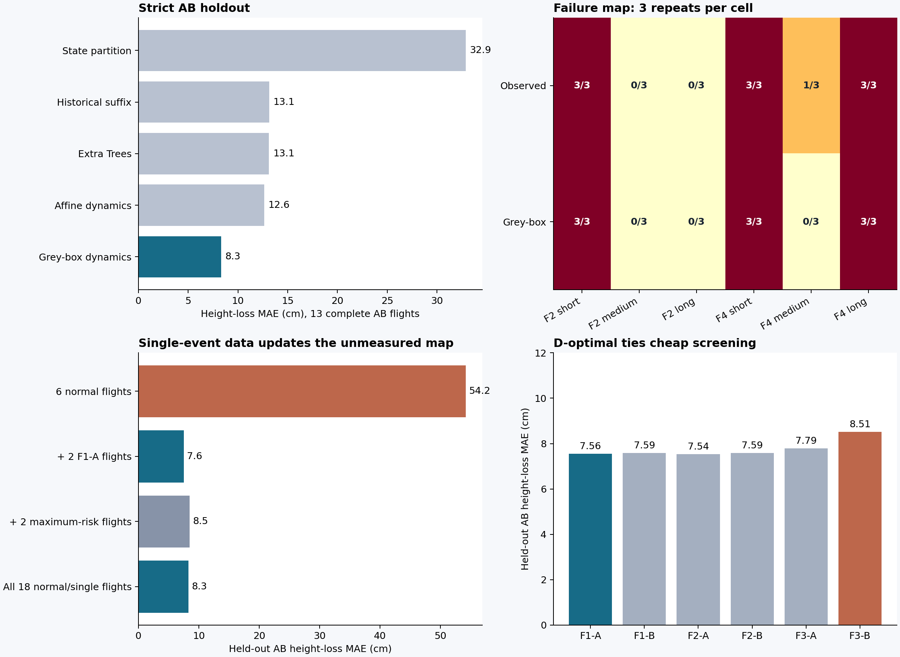

2026-10-28 · 仅既有记录与本地计算 · 未启动 SITL、未使用 Thor
单事件信息能否迁移到未测组合？
可保留的核心是：用控制器源码和结构化动力学，把少量单事件轨迹转化为整个组合响应地图的更新。本轮已得到跨组合预测优势；“更快找到任意失败”仍与强廉价基线打平。
核心证据：辨识数据完全移除多事件轨迹后，18 条 AB 留出记录中，灰箱模型任务分类正确 17 条；最强历史查表正确 14 条。完整 AB 的损高误差为 8.32 cm，廉价特征学习为 13.12 cm。加入两条单事件记录，能够把未测 AB 地图的损高误差从 54.20 cm 降到 7.56 cm。
留出协议与信息边界
- 重新辨识 P11 动力学，只使用 6 条 NORMAL 与 12 条单事件 A/B，共 18 条记录。AB、REPAIR 和多事件锚点均移除；已知控制器权重和源码事件规则保持固定。
- 廉价基线获得相同 P11 单事件历史，并额外获得 P13 单事件记录。所有 P13 AB 均留出。超参数只在训练集内按整类条件交叉验证。
- 预测从飞行开始前的初值和已知计划出发。没有使用 A 后状态、B 前状态、未来目标、实际未来触发时间或 COM 真值。
- 测试集为 18 条 AB：任务失败 10 条、成功 8 条。连续损高误差只评价 13 条完整记录；另外 5 条为截断下界。所有 18 条始终保留在选测候选池中。
- 原任务阈值保持倾角 45°、损高 1 m。损高基准统一为原始共同首事件时刻 13.255 s。66 份归档初值、参考计划、事件窗口和相位均逐一核对；两个案例通过未来结果置换不变性核验。
- 这是在熟悉历史结果后开展的回顾性方法搜索。每次拟合没有使用留出标签，但多次方法迭代共享了这批评价数据。
主对照结果
| 方法 | 完整 AB 损高 MAE | 任务漏判 | 任务误报 | 任务分类正确 |
|---|
| 源码耦合灰箱模型 | 8.32 cm | 1 | 0 | 17/18 |
| 历史后缀查表 | 13.15 cm | 4 | 0 | 14/18 |
| 廉价特征学习：Extra Trees | 13.12 cm | 3 | 2 | 13/18 |
| 状态拆分 | 32.89 cm | 3 | 2 | 13/18 |
还比较了线性/二次岭回归、浅树、RBF 核回归、梯度提升、最近邻、单事件加和和最大值组合。源码模型的全组合任务分类仍最好。平均完整轨迹倾角误差则由一个 Extra Trees 对照略胜：0.756° 对 0.811°；该对照漏掉了 7 个已观测倾角失败中的 6 个，源码模型漏掉 1 个。完整轨迹的平均误差不能代替危险尾部识别。

它确实改变了哪些选择
以第三个重复块、最大倾角为目标，源码模型选择 F2–AB–short；廉价计划特征排序选择 F4–AB–long。模型预测分别为 46.424° 与 46.014°；实际前者已达到 50.849° 后截断，后者完整峰值为 45.884°。这一次选择得到更高的已证实倾角风险。前两块同样改变选择，但两个候选都有截断，完整峰值的真实先后仍未知。
选择收益的边界：按“是否找到任意任务失败”计分，源码模型和最强廉价计划排序都能达到 3/3。按最大损高选择，两者也都选中 F4 短间隔。因此本轮支持危险响应地图更准确、部分风险目标下选择更好；不能据此宣称一般找错效率已超过廉价基线。
地图更新的可复用信息是什么
起点使用 6 条正常飞行，随后只加入 P11 的两条 F1–A 单事件记录；所有下表 AB 仍未进入辨识。更新了共享动力学系数，控制器源码、事件计划、阈值和网络权重均未改动。
| 未测组合 | 量 | 正常数据模型 | 加两条单事件后 | 实测 |
|---|
| F2-b3-AB-short | 倾角 | 39.737 ° | 46.634 ° | ≥50.849 ° |
| F4-b2-AB-medium | 损高 | 2.085 m | 0.946 m | 0.806 m |
| F4-b2-AB-short | 损高 | 2.053 m | 1.180 m | 1.313 m |
这次更新同时修正了“F2 短间隔的倾角危险”与“F4 中间隔的虚假损高危险”，并保留 F4 短间隔的真实损高失败。它体现了跨方向、跨事件组合传播的模型更新。查表只获得新的单事件单元；共享动力学参数为未测组合提供了新的响应预测。
六种可选单事件条件分别用于一次更新时，AB 损高误差为 7.54–8.51 cm。D-optimal 选择约 7.56 cm，简单筛选完整轨迹后均匀选样的平均值约 7.57 cm。D-optimal 的独立选样贡献未建立，当前不保留为核心贡献。
模型与经典理论的具体分工
模型：复用实际 GRU16、动作历史、采样与提交时钟、超时捕获和恢复规则；机体保留位置、速度、姿态、角速度及四个执行滤波状态。只辨识 10 个有效动力学系数。神经控制器权重保持封存。每个事件在预测状态上执行，A 的恢复状态自然成为 B 的初始状态；世界高度账本持续累积。
v̇ = g e₃ − kT · T(f) · R(q)e₃ − Dv
ω̇ = Kτ · ΔT(f) − Dω · ω
θ = (kT, Dx, Dy, Dz, Kτx, Kτy, Kτz, Dωx, Dωy, Dωz)
经典理论：采用结构化灰箱系统辨识。动力学方程规定参数如何跨方向和事件共享，参数通过轨迹回归估计；完整源码闭环随后组合未测事件。这些系数是有效经验系数，当前没有把它们解释为精确真实质量或惯量。
独立结构对照保留相同 18 条数据、控制器、事件逻辑和角动态，只替换平移动力学：局部推力线性化的 AB 损高 MAE 为 17.73 cm，普通仿射动力学为 12.65 cm，非线性推力方向结构为 8.32 cm。三者分别出现 3、3、0 个高度误报。这是目前经典结构提供独立收益的具体证据。
正常数据上用积分方程辨识也已核验：窗口由正常数据内部交叉验证选择，AB 损高误差却达到 60.09 cm。正常轨迹拟合得好，仍可能缺少对事件响应有用的激励。
研究判断与反驳条件
值得保留的核心问题：一次便宜、可完整观测的测试，能否辨识出可迁移的闭环响应，从而预测并更新大量尚未执行的事件组合。当前已验证“单事件轨迹 → 共享参数 → 未测 AB 地图”的能力。这比重复统计发现了多少个已知类型的失败更能体现模型价值。
- 保留的核心构造：源码耦合的轻量灰箱模型、单事件辨识、组合响应外推、共享参数驱动地图更新。
- 尚未建立：一般选测效率优势、D-optimal 独立贡献、未来误差硬界、跨平台有效性。
- 切换核验仍为负面：P3 的短暂重入输出预测可被 previous-action 廉价特征接近，选择没有独立收益；不能把断流的组合外推结果推广为切换已经成立。
- 修复选择也缺少独立优势：既有固定 C/CR 修复已很强。当前可以把修复写入同一源码事件模型，修复优选能力仍待证据支持。
- 明确反驳方式：同等信息的廉价时序模型达到同等组合地图准确率；跨组合优势依赖先前组合辨识数据；参数更新改善一个区域却系统性破坏其他区域；不同平台或控制器源码下共享结构失效。
范围：PX4–RAPTOR，当前主要是同一平台上的断流组合。严格留出只验证现有可比数据；结构设计已参考全部历史。更早轮次用于方向审查，没有把不同版本、观测口径的全部记录混成训练样本。
可复核文件
主比较与逐案例预测 · 补强基线 · 单事件更新 · 动力学结构对照 · 输入核验 · 假设与失败记录
较早的完整轨迹训练、原点计量和候选池处理版本均单独保留，文件名含 prestream_accounting、v1 或 superseded 的结果已被后续版本替代。本报告只采用修正后的统一口径。